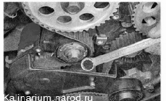
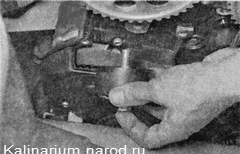

Натяжной и направляющий ролики ремня привода ГРМ - проверка и заменаЕсли при работе двигателя, в зоне под передними крышками ремня привода ГРМ прослушивается сильный шум вращающегося подшипника , следует проверить состояние натяжного и направляющего роликов и при необходимости заменить. Это можно сделать без снятия ремня. Также ролики следует заменять при регламентной замене ремня привода ГРМ . Проверка 1. Подготавливаем автомобиль к выполнению работы. 2. Снимаем верхнюю переднюю крышку ремня привода ГРМ. 3. Ключом на 15 мм, отвернув на пол-оборота болт крепления натяжного ролика, ослабляем натяжение ремня привода ГРМ. Замечание Для замены роликов без снятия ремня привода ГРМ достаточно ослабить натяжение ремня. При этом есть риск перескакивания ремня через зубья шкива, что приведет к смещению фаз газораспределения. Поэтому перед тем как ослабить натяжение ремня, совместите метку на шкивах распределительных валов с выступами задней крышки ремня ( «Ремень привода ГРМ - замена») . После установки роликов метки не должны сместиться. 4. Снимаем ремень привода ГРМ с натяжного ролика. 5. Вращая натяжной и направляющий ролики, проверяем их состояние. Ролики, имеющие люфт и издающие сильный шум при вращении, необходимо заменить. Снятие 1. Ключом на 15 мм отворачиваем болт крепления натяжного ролика и снимаем ролик вместе с болтом. 2. Аналогичным образом снимаем направляющий ролик. Установка 1. Устанавливаем направляющий ролик и затягиваем болт его крепления моментом 33,2-41,2 Н-м (3,4-4,2 кгс-м). 2. Устанавливаем натяжной ролик, не затягивая болт крепления. 3. Надеваем на шкивы ремень привода ГРМ и регулируем его натяжение. 4. Устанавливаем снятые детали в последовательности, обратной снятию. |